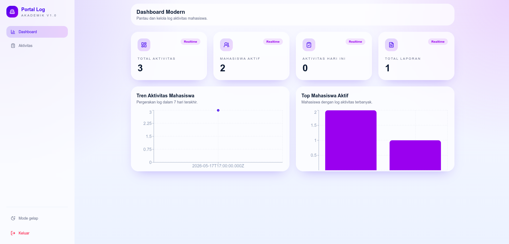

Website Gojek
Clone tampilan aplikasi Gojek berbasis web dengan desain modern dan responsive.
Saya adalah mahasiswa Teknik Informatika Universitas Jabal Ghafur yang fokus pada pengembangan website modern, UI/UX design, dan solusi digital kreatif.
Saya adalah mahasiswa Teknik Informatika dengan passion di bidang Web Development dan UI/UX Design. Saya aktif membuat project modern, mengikuti kompetisi teknologi, dan terus meningkatkan kemampuan melalui pengalaman praktis.
Membangun tampilan website modern dan responsive.
Mendesain antarmuka aplikasi yang modern dan user friendly.
Membuat aplikasi web full stack menggunakan teknologi modern.
Clone tampilan aplikasi Gojek berbasis web dengan desain modern dan responsive.

Aplikasi kas desa berbasis web untuk mengelola keuangan desa secara digital.

Sistem log aktivitas mahasiswa berbasis web full stack untuk pencatatan dan monitoring aktivitas akademik.